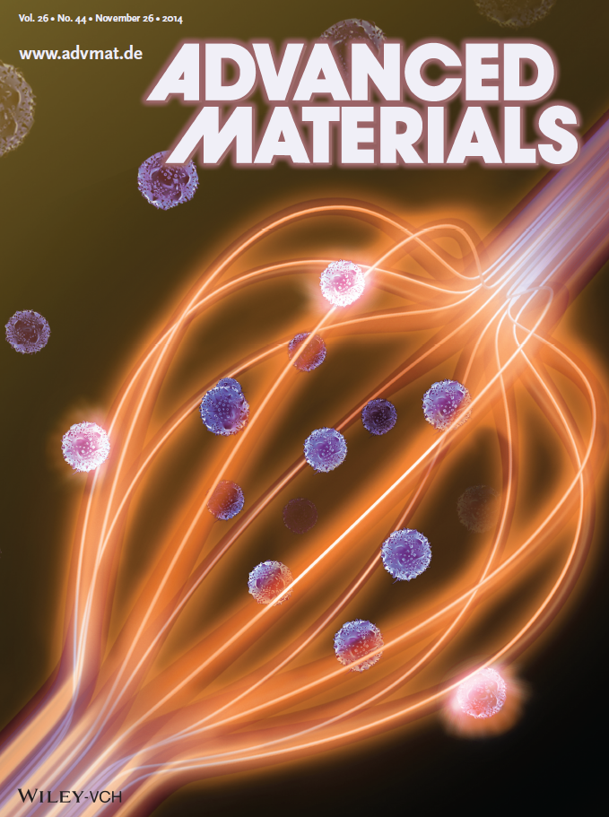
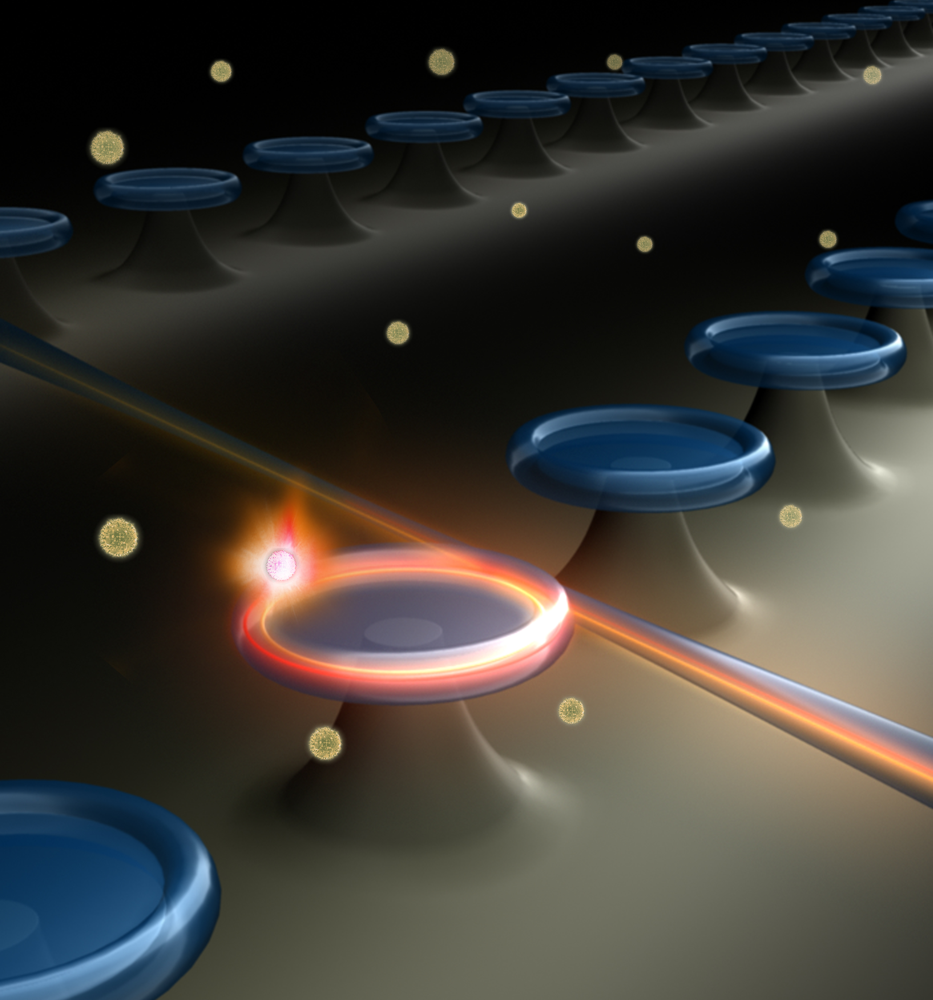

Publication
Featured Publications
Single Nanoparticle Detection and Sizing Using a Nanofiber Pair in an Aqueous Environment

Xiao-Chong Yu, Bei-Bei Li (co-first author) et al., Advanced Materials 26(44), 7462-7467 (2014). Front cover paper, highlighted in Materials Views, AZO nano.Optical fiber sensors have been extensively employed in high-sensitivity biosensing, due to their advantages of simple configuration, low cost, label-free property, and remote sensing capability. Over the past few years, it has been demonstrated that when the diameter of fiber is reduced to the scale of optical wavelength, there exists pronounced evanescent field outside the nanofiber, which is very sensitive to the refractive index change of the surrounding medium. In this work, we fabricated a pair of nanofibers with uniform diameter, and placed them into a microfluidic channel. When single nanoparticles in the microfluidic channel are bound to the surface of the nanofibers, the transmitted power shows a significant decrease due to the scattering and absorption of the nanoparticles in the evanescent field. By monitoring the step changes in the transmission of the nanofiber, detection and sizing of nanoparticles with single uniform radius (~ $100$ nm) and of mixed nanoparticles with two different radii ($100$ nm and 170 nm) are both realized. Moreover, by employing plasmonic enhancement, detection of single gold nanorods with much smaller sizes (diameter ~ $16$ nm, length ~ $40$ nm), is also demonstrated. This nanofiber pair can be further extended to an array containing more nanofibers, thus to dramatically increase the sensing speed, which promises a bright future of the nanofiber sensors.
Single nanoparticle detection using split-mode microcavity Raman lasers

Bei-Bei Li et al., PNAS 111(41), 14657-14662 (2014). Highlighted in Phys. org, Asian Scientist, and AZO nano.Ultrasensitive nanoparticle detection holds great potential for early-stage diagnosis of human diseases and for environmental monitoring. In this work, we report for the first time, to our knowledge, single nanoparticle detection by monitoring the beat frequency of split-mode Raman lasers in high-Q optical microcavities. We first demonstrate this method by controllably transferring single 50-nm–radius nanoparticles to and from the cavity surface using a fiber taper. We then realize real-time detection of single nanoparticles in an aqueous environment, with a record low detection limit of $20$ nm in radius, without using additional techniques for laser noise suppression. Because Raman scattering occurs in most materials under practically any pump wavelength, this Raman laser-based sensing method not only removes the need for doping the microcavity with a gain medium but also loosens the requirement of specific wavelength bands for the pump lasers, thus representing a significant step toward practical microlaser sensors.
Coherent Polariton Dynamics in Coupled Highly Dissipative Cavities
Yong-Chun Liu et al., Phys. Rev. Lett. 112(21), 213602 (2014). Highlighted in Phys. org, Photonics Online
The coherent light-matter interaction at the single-photon and electronic qubit level promises to be a remarkable potential for nonclassical information processing. Besides the efforts of improving the figure of merit of the cavities, here we demonstrate strong anharmonicity in the polariton dressed states via dark state resonances in a highly dissipative cavity. It is shown that the vacuum Rabi oscillation occurs for a single quantum emitter inside a cavity even with the bosonic decay-to-interaction rate ratio exceeding $10^2$, when the photon field is coupled to an auxiliary high-Q cavity. This study provides a promising platform for overcoming decoherence and advancing the coherent manipulation of polariton qubits.
Detection of Single Nanoparticles and Lentiviruses Using Microcavity Resonance Broadening

A new label-free sensing mechanism is demonstrated experimentally by monitoring the whispering-gallery mode broadening in microcavities. It is immune to both noise from the probe laser and environmental disturbances, and is able to remove the strict requirement for ultra-high-Q mode cavities for sensitive nanoparticle detection. This ability to sense nanoscale objects and biological analytes is particularly crucial for wide applications.
Parametric Down-Conversion and Polariton Pair Generation in Optomechanical Systems
Yong-Chun Liu et al., Phys. Rev. Lett. 111(8), 083601 (2013).
We demonstrate that the nonlinear optomechanical interaction leads to parametric down-conversion, capable of generating polariton pairs formed by photons and phonons. The nonlinearity is resonantly enhanced through frequency matching, and such parametric down-conversion does not require the stringent condition that the single-photon optomechanical coupling strength g be on the order of the mechanical resonance frequency ωm. We provide analytical results for the frequency matching condition and derive the nonlinear coefficient. Numerical simulations on polariton pair generation are presented, showing that photon like polaritons, phononlike polaritons, and mixed photon-phonon polaritons can be selectively generated. Such nonlinear interaction offers a promising way for harnessing the optomechanical nonlinearity to manipulate photons and phonons.
Tunneling-induced transparency in a chaotic microcavity
Yun-Feng Xiao*et al., Laser & Photonics Reviews 7(5), L51-L54 (2013). Back inside cover paper, Highlighted in materialsviews.com
A new form of induced transparency enabled by dynamical tunneling coupling of continuous chaos and discrete regular modes in a slightly deformed optical microcavity is demonstrated experimentally. An optical beam is focused on the cavity boundary and tuned on resonance with a high-Q mode, which leads to destructive interference for the excitation of chaotic field and induces a transparency in the transmission. The experimental results are in excellent agreement with a model based on quantum scattering theory. This tunneling-induced transparency is accompanied by extremely steep normal dispersion, and holds great potential in slow light and enhanced nonlinear interactions.
Dynamic Dissipative Cooling of a Mechanical Resonator in Strong Coupling Optomechanics
Yong-Chun Liu et al., Phys. Rev. Lett. 110(15), 153606 (2013).
Cooling of mesoscopic mechanical resonators represents a primary concern in cavity optomechanics. In this Letter, in the strong optomechanical coupling regime, we propose to dynamically control the cavity dissipation, which is able to significantly accelerate the cooling process while strongly suppressing the heating noise. Furthermore, the dynamic control is capable of overcoming quantum backaction and reducing the cooling limit by several orders of magnitude. The dynamic dissipation control provides new insights for tailoring the optomechanical interaction and offers the prospect of exploring mesoscopic quantum physics.
Highly unidirectional emission and ultralow-threshold lasing from on-chip ultrahigh-Q microcavities

Ultrahigh-Q optical whispering gallery microcavities are promising platforms for fundamental studies and applied photonics. A new type of on-chip microcavity is experimentally realized, which supports both highly unidirectional emission and ultra-high-Q factors exceeding $100$ million in near infrared. By doping erbium, the unidirectional-emission lasing is observed in $1550$ nm band with the threshold as low as $2\mu$W.
Strongly enhanced light-matter interaction in a hybrid photonic-plasmonic resonator

We propose a hybrid photonic-plasmonic resonant structure which consists of a metal nanoparticle (MNP) and a whispering-gallery-mode (WGM) microcavity. It is found that the hybrid mode enables a strong interaction between the light and matter, and the single-atom cooperativity is enhanced by more than two orders of magnitude compared to that in a bare WGM microcavity. This improvement originates from two aspects: the MNP offers a highly enhanced local field in the vicinity of an emitter, and, interestingly, the high-Q property of WGMs can be maintained in the presence of the MNP. Thus the present system has advantages over a single microcavity or a single MNP, and holds potential in quantum optics, nonlinear optics, and highly sensitive biosensing.
High- Q Exterior Whispering-Gallery Modes in a Metal-Coated Microresonator
Yun-Feng Xiao* et al., Phys. Rev. Lett. 105(15), 153902 (2010). Highlighted in Optics and Photonics News.
We propose a kind of plasmonic whispering-gallery mode highly localized on the exterior surface of a metal-coated microresonator. This exterior (EX) surface mode possesses high quality factors at room temperature, and can be efficiently excited by a tapered fiber. The EX mode can couple to an interior (IN) mode and this coupling produces a strong anticrossing behavior, which not only allows conversion of IN to EX modes, but also forms a long-lived antisymmetric mode. As a potential application, the EX mode could be used for a biosensor with a sensitivity high of up to $500$ nm per refraction index unit, a large figure of merit, and a wide detection range.
Paper Archive
2016
-
Xue-Feng Jiang, Chang-Ling Zou, Li Wang, Qihuang Gong, and Yun-Feng Xiao*, "Whispering-gallery microcavities with unidirectional laser emission," Laser & Photonics Review 10(1), 40-61 (2016). Front cover paper, invited review
-
Bo-Qiang Shen, Xiao-Chong Yu, Yanyan Zhi, Li Wang, Donghyun Kim, Qihuang Gong, and Yun-Feng Xiao*, "Detection of Single Nanoparticles Using the Dissipative Interaction in a High-Q Microcavity," Phys. Rev. Applied 5, 024011 (2016). Highlighted in Phys. org, nanowerk, Controlled Environments, and nanotechnology world association
2015
-
Pan Wang, Yipei Wang, Zongyin Yang, Xin Guo, Xing Lin, Xiao-Chong Yu, Yun-Feng Xiao, Wei Fang, Lei Zhang, Guowei Lu, Qihuang Gong, and Limin Tong, "Single-Band 2-nm-Line-Width Plasmon Resonance in a Strongly Coupled Au Nanorod," Nano Lett. 15, 7581-7586 (2015)
-
Xi Chen, Yong-Chun Liu, Pai Peng, Yanyan Zhi, and Yun-Feng Xiao*, "Cooling of macroscopic mechanical resonators in hybrid atom-optomechanical systems," Phys. Rev. A 92(3), 033841 (2015).
-
Yong-Chun Liu, Yun-Feng Xiao*; Xing-Sheng Luan, and Chee Wei Wong*, "Optomechanically-induced-transparency cooling of massive mechanical resonators to the quantum ground state," Science China 58(5), 050305 (2015).
-
Rui-Shan Liu, Wei-Liang Jin, Xiao-Chong Yu, Yong-Chun Liu, and Yun-Feng Xiao*, "Enhanced Raman scattering of single nanoparticles in a high-Q whispering-gallery microresonator," Phys. Rev. A 91(4), 043836 (2015).
-
Yong-Chun Liu, Yun-Feng Xiao*, Xingsheng Luan, Qihuang Gong, and Chee Wei Wong*, "Coupled cavities for motional ground-state cooling and strong optomechanical coupling," Phys. Rev. A 91(3), 033818 (2015).
-
Yong-Chun Liu, Rui-Shan Liu, Chun-Hua Dong, Yan Li, Qihuang Gong, and Yun-Feng Xiao*, "Cooling mechanical resonators to the quantum ground state from room temperature," Phys. Rev. A 91(1), 013824 (2015).
-
William R. Clements, Bei-Bei Li, Bo-Qiang Shen, and Yun-Feng Xiao*, "Raman-lasing dynamics in split-mode microresonators,"Phys. Rev. A 91(1), 013804 (2015).
2014
- Zhou-Chen Luo, Cao-Yuan Ma, Bei-Bei Li, and Yun-Feng Xiao, "MHz-level self-sustained pulsation in polymer microspheres on a chip," AIP Advance 4, 122902 (2014). Invited paper
-
Bei-Bei Li, William R. Clements, Xiao-Chong Yu, Kebin Shi, Qihuang Gong, and Yun-Feng Xiao, "Single nanoparticle detection using split-mode microcavity Raman lasers," PNAS 111(41), 14657-14662 (2014). Highlighted in Phys. org, Asian Scientist, and AZO nano
- Yuwen Hu, Linbo Shao, Stephen Arnold, Yong-Chun Liu, Cao-Yuan Ma, and Yun-Feng Xiao, "Mode broadening induced by nanoparticles in an optical whispering-gallery microcavity," Phys. Rev. A 90(5), 043847 (2014). One figure from this work was selected by journal web site of Physical Review A as part of "Kaleidoscope"
- Xiao-Chong Yu, Bei-Bei Li, Pan Wang, Limin Tong, Xue-Feng Jiang, Yan Li, Qihuang Gong, and Yun-Feng Xiao, "Single Nanoparticle Detection and Sizing Using a Nanofiber Pair in Aqueous Environment," Advanced Materials 26(44), 7462-7467 (2014). Front cover paper, highlighted in Materials Views, AZO nano
-
Yong-Chun Liu, Xingsheng Luan, Hao-Kun Li, Qihuang Gong, Chee Wei Wong, and Yun-Feng Xiao*, "Coherent polariton dynamics in coupled highly-dissipative cavity quantum electrodynamics,"Phys. Rev. Lett. 112(21), 213602 (2014). Highlighted in Phys. org, Photonics Online
-
Yong-Chun Liu, Yu-Feng Shen, Qihuang Gong, and Yun-Feng Xiao*, "Optimal limits of cavity optomechanical cooling in the strong-coupling regime," Phys. Rev. A 89(5), 053821 (2014).
2013
-
Yong-Chun Liu, Yu-Wen Hu, Chee Wei Wong, and Yun-Feng Xiao, "Review of cavity optomechanical cooling," Chin. Phys. B 22(11), 114213 (2013).
-
Hao-Kun Li, Xue-Xin Ren, Yong-Chun Liu, and Yun-Feng Xiao, "Photon-photon interactions in a largely detuned optomechanical cavity," Phys. Rev. A 88, 053850 (2013).
-
Yi-Wen Hu, Yun-Feng Xiao*, Yong-Chun Liu, and Qihuang Gong, "Optomechanical sensing with on-chip microcavities," Front. Phys. 8(5), 475-490 (2013). Review Article, ��ף������ѧ��������ר��
-
Xue-Feng Jiang, Yun-Feng Xiao*, Qi-Fan Yang, Linbo Shao, William R. Clements, and Qihuang Gong*, "Free-space coupled, ultralow-threshold Raman lasing from a silica microcavity," Appl. Phys. Lett. 103(10), 101102 (2013).
-
Linbo Shao, Li Wang, Wenjie Xiong, Xue-Feng Jiang, Qi-Fan Yang, and Yun-Feng Xiao, "Ultrahigh-Q, largely deformed microcavities coupled by a free-space laser beam," Appl. Phys. Lett. 103(12), 121102 (2013).
-
Yong-Chun Liu, Yun-Feng Xiao*, You-Ling Chen, Xiao-Chong Yu, and Qihuang Gong*, "Parametric Down-Conversion and Polariton Pair Generation in Optomechanical Systems," Phys. Rev. Lett. 111(8), 083601 (2013).
-
Linbo Shao, Xue-Feng Jiang, Xiao-Chong Yu, Bei-Bei Li, William R. Clements, Frank Vollmer, Wei Wang, Yun-Feng Xiao*, and Qihuang Gong*, "Detection of Single Nanoparticles and Lentiviruses Using Microcavity Resonance Broadening," Advanced Materials 25(39), 5616-5620 (2013). Frontispiece paper, highlighted in Materials Views, Materials Views China
-
Qi-Fan Yang, Xue-Feng Jiang, Ya-Long Cui, Linbo Shao, and Yun-Feng Xiao, "Dynamical tunneling-assisted coupling of high-Q deformed microcavities using a free-space beam," Phys. Rev. A 88(2), 023810 (2013).
-
Meng-Yuan Yan, Hao-Kun Li, Yong-Chun Liu, Wei-Liang Jin, and Yun-Feng Xiao, "Dissipative optomechanical coupling between a single-wall carbon nanotube and a high-Q microcavity," Phys. Rev. A 88(02), 023802 (2013).
-
Yun-Feng Xiao*, Xue-Feng Jiang, Qi-Fan Yang, Li Wang, Kebin Shi, Yan Li, and Qihuang Gong*, "Tunneling-induced transparency in a chaotic microcavity," Laser Photonics Reviews 7(5), L51-L54 (2013). Back inside cover paper, highlighted in Materials Views
-
Bei-Bei Li, Yun-Feng Xiao*, Meng-Yuan Yan, William R. Clements, and Qihuang Gong*, "Low-threshold Raman laser from an on-chip, high-Q, polymer-coated microcavity," Opt. Lett. 38(11), 1802-1804 (2013).
-
Yong-Chun Liu, Yun-Feng Xiao*; Xingsheng Luan, Chee Wei Wong*, ��Dynamic Dissipative Cooling of a Mechanical Resonator in Strong Coupling Optomechanics,�� Phys. Rev. Lett. 110(15), 153606 (2013).
-
Xue-Xin Ren, Hao-Kun Li, Meng-Yuan Yan, Yong-Chun Liu, Yun-Feng Xiao,* and Qihuang Gong*, "Single-photon transport and mechanical NOON-state generation in microcavity optomechanics," Phys. Rev. A 87(3), 033807 (2013).
-
Jin-Ming Cui, Chun-Hua Dong, Chang-Ling Zou, Fang-Wen Sun*, Yun-Feng Xiao, Zheng-Fu Han, and Guang-Can Guo, "Controlling deformation in a high quality factor silica microsphere toward single directional emission," Appl. Opt. 52(2), 298-301 (2013).
-
Yi-Wen Hu, Bei-Bei Li, Yi-Xiang Liu, Yun-Feng Xiao*, Qihuang Gong*, "Hybrid photonic-plasmonic mode for refractometer and nanoparticle trapping," Opt. Comm. 291, 380-385 (2013).
-
Wei-Liang Jin, Xu Yi, Yi-Wen Hu, Bei-Bei Li, and Yun-Feng Xiao, "Temperature-insensitive detection of low-concentration nanoparticles using a functionalized high-Q microcavity," Appl. Opt. 52(2), 155-161 (2013).
2012
-
Xiao-Chong Yu, Yong-Chun Liu, Meng-Yuan Yan, Wei-Liang Jin, and Yun-Feng Xiao, "Coupling of diamond nanocrystals to a high-Q whispering-gallery microresonator," Phys. Rev. A 86(4), 043833 (2012).
-
Xue-Feng Jiang, Yun-Feng Xiao*, Chang-Ling Zou, Lina He, Chun-Hua Dong, Bei-Bei Li, Yan Li, Fang-Wen Sun, Lan Yang, and Qihuang Gong*, "Highly unidirectional emission and ultralow-threshold lasing from on-chip ultrahigh-Q microcavities," Advanced Materials 24(35), OP260 (2012). Highlighted in Materials Views, Optik & Photonik, and Optics and Photonics News
-
Xu Yi, Yun-Feng Xiao*, Yin Feng, Dong-Ying Qiu, Jing-Yi Fan, Yan Li, and Qihuang Gong*, "Mode-splitting-based optical label-free biosensing with a biorecognition-covered microcavity," J. Appl. Phys. 111(11), 114702 (2012).
-
Hao-Kun Li, Yong-Chun Liu, Xu Yi, Chang-Ling Zou, Xue-Xin Ren, and Yun-Feng Xiao, "Proposal for a near-field optomechanical system with enhanced linear and quadratic coupling," Phys. Rev. A 85(5), 053832 (2012).
-
Yun-Feng Xiao*, Yong-Chun Liu*, Bei-Bei Li, You-Ling Chen, Yan Li, and Qihuang Gong*, "Strongly enhanced light-matter interaction in a hybrid photonic-plasmonic resonator," Phys. Rev. A 85(3), 031805(R) (2012). "Rapid Communications". One figure from this work was selected by journal web site of Physical Review A as part of ��Kaleidoscope��
-
Chang-Ling Zou, Fang-Wen Sun, Chun-Hua Dong, Yun-Feng Xiao, Xi-Feng Ren, Liu Lv, Xiang-Dong Chen, Jin-Ming Cui, Zheng-Fu Han, and Guang-Can Guo, "Movable Fiber-Integrated Hybrid Plasmonic Waveguide on Metal Film," IEEE Photon. Tech. Lett. 24(6), 434-436 (2012).
-
Bei-Bei Li, Yun-Feng Xiao*, Chang-Ling Zou, Xue-Feng Jiang, Yong-Chun Liu, Fang-Wen Sun, Yan Li, and Qihuang Gong*, "Experimental controlling of Fano resonance in indirectly coupled whispering-gallery microresonators," Appl. Phys. Lett. 100(02), 021108 (2012).
-
Yong-Chun Liu, Yun-Feng Xiao*, Xue-Feng Jiang, Bei-Bei Li, Yan Li, and Qihuang Gong*, "Cavity-QED treatment of scattering-induced free-space excitation and collection in high-Q whispering-gallery microcavities," Phys. Rev. A. 85(01), 013843 (2012).
2011
-
Yun-Feng Xiao*, Chang-Ling Zou, Yi-Wen Hu, Yan Li, Lixin Xiao, Fang-Wen Sun, and Qihuang Gong*, "Broadband Enhancement of Light Harvesting in a Luminescent Solar Concentrator," IEEE Journal of Quantum Electronics 47(9), 1171 (2011).
-
Yong-Chun Liu, Yun-Feng Xiao*, Bei-Bei Li, Xue-Feng Jiang, Yan Li, and Qihuang Gong*, "Coupling of a Single Diamond Nanocrystal to a Whispering-Gallery Microcavity: Photon Transportation Benefitting from Rayleigh Scattering," Phys. Rev. A 84, 011805(R) (2011). "Rapid Communications"
-
Fang-Jie Shu, Chang-Ling Zou, Fang-Wen Sun, and Yun-Feng Xiao, "Mechanism of directional emission from a peanut-shaped microcavity," Phys. Rev. A 83(05), 053835 (2011). One figure from this work was selected by journal web site of Physical Review A as part of "Kaleidoscope��
-
Xu Yi, Yun-Feng Xiao*, Yong-Chun Liu, Bei-Bei Li, You-Ling Chen, Yan Li, and Qihuang Gong*, "Multiple-Rayleigh-scatterer-induced mode splitting in a high-Q whispering-gallery-mode microresonator," Phys. Rev. A 83(02), 023803 (2011).
-
Bei-Bei Li, Yun-Feng Xiao*, Chang-Ling Zou, Yong-Chun Liu, Xue-Feng Jiang, You-Ling Chen, Yan Li, and Qihuang Gong*, "Experimental observation of Fano resonance in a single whispering-gallery microresonator," Appl. Phys. Lett. 98 (02), 021116 (2011).
2010
-
Yun-Feng Xiao*, Min Li, Yong-Chun Liu, Yan Li, Xiudong Sun*, and Qihuang Gong*, "Asymmetric Fano resonance analysis in indirectly coupled microresonators," Phys. Rev. A 82 (6), 065804 (2010)
-
Xu Yi, Yun-Feng Xiao*, Yan Li, Yong-Chun Liu, Bei-Bei Li, Zhao-Pei Liu, and Qihuang Gong*, "Polarization-dependent detection of cylinder nanoparticles with mode splitting in a high-Q whispering-gallery microresonator," Appl. Phys. Lett. 97(20), 203705 (2010).
-
Chang-Ling Zou, Fang-Wen Sun, Yun-Feng Xiao, Chun-Hua Dong, Xiang-Dong Chen, Jin-Ming Cui, Qihuang Gong, Zheng-Fu Han, and Guang-Can Guo, "Plasmon modes of silver nanowire on a silica substrate," Appl. Phys. Lett. 97(18), 183102 (2010). "monthly top 20 most-downloaded articles"
-
Yun-Feng Xiao*, Chang-Ling Zou, Bei-Bei Li, Yan Li, Chun-Hua Dong, Zheng-Fu Han, and Qihuang Gong*, "High-Q exterior whispering gallery modes in a metal-coated microresonator," Phys. Rev. Lett., 105(15), 153902 (2010). Highlighted in Optics and Photonics News; ��ѡ��2010�й���ѧ��Ҫ�ɹ���
-
Lina He, Sahin Kaya Ozdemir, Yun-Feng Xiao, and Lan Yang, "Gain-Induced Evolution of Mode Splitting Spectra in a High-Q Active Microresonator," IEEE JOURNAL OF QUANTUM ELECTRONICS 46(11), 1626 (2010).
-
Bei-Bei Li, Qing-Yan Wang, Yun-Feng Xiao*, Xue-Feng Jiang, Yan Li, Lixin Xiao, and Qihuang Gong, "On chip, high-sensitivity thermal sensor based on high-Q polydimethylsiloxane-coated microresonator," Appl. Phys. Lett. 96(25), 251109 (2010).
-
Yun-Feng Xiao*, Chang-Ling Zou, Peng Xue, Lixin Xiao, Yan Li, Chun-Hua Dong, Zheng-Fu Han, and Qihuang Gong, "Quantum electrodynamics in a whispering-gallery microcavity coated with a polymer nanolayer," Phys. Rev. A 81(5), 053807 (2010).
-
Yun-Feng Xiao*, Bei-Bei Li, X. Jiang, Xiaoyong Hu, Yan Li, and Qihuang Gong, "High quality factor, small mode volume, ring-type plasmonic microresonator on a silver chip," J. Phys. B: At. Mol. Opt. Phys. 43, 035402 (2010).
-
Yun-Feng Xiao*, Yan Li and Qihuang Gong; Chang-Ling Zou, Chun-Hua Dong and Zheng-Fu Han, "Asymmetric resonant cavities and their applications in optics and photonics: a review," Frontiers of Optoelectronics in China 3(2), 109-124 (2010).
-
Chang-Ling Zou, Yun-Feng Xiao, Zheng-Fu Han, Chun-Hua Dong, Xiang-Dong Chen, Jin-Ming Cui, Guang-Can Guo, and Fang-Wen Sun, " High-Q nanoring surface plasmon microresonator," J. Opt. Soc. Am. B 27(12), 2495-2498 (2010).
-
Jiangang Zhu, Sahin Kaya Ozdemir, Yun-Feng Xiao, Lin Li, Lina He, Da-Ren Chen and Lan Yang, "On-chip single nanoparticle detection and sizing by mode splitting in an ultrahigh-Q microresonator," Nature Photonics 4, 46-49 (2010). Highlighted in Physics News, Science Daily, R&D Magazine, Physorg.com, Photonics.com, Technology Review (published by MIT), Genetic Engineering & Biotechnology News
2009
-
Chun-Hua Dong, Chang-Ling Zou, Yun-Feng Xiao, Jin-Ming Cui, Zheng-Fu Han, and Guang-Can Guo, "Modified transmission spectrum induced by two-mode interference in a single silica microsphere," J. Phys. B: At. Mol. Opt. Phys. 42, 215401 (2009). Featured in the Annual Highlights 2009 in J. Phys. B
-
Chang-Ling Zou, Yong Yang, Yun-Feng Xiao, Chun-Hua Dong, Zheng-Fu Han*, and Guang-Can Guo, "Accurately calculating high quality factor of whispering-gallery modes with boundary element method," J. Opt. Soc. Am. A 26(11), 2050-2053 (2009).
-
Yun-Feng Xiao*, Lina He, Jiangang Zhu, and Lan Yang*, "Electromagnetically induced transparency-like effect in a single polydimethylsiloxane-coated silica microtoroid," Appl. Phys. Lett. 94(23), 231115 (2009).
-
C.-H. Dong, L He, Y.-F. Xiao*, V. R. Gaddam, S. K. Ozdemir, Z.-F. Han, G.-C. Guo, and L. Yang*, "Fabrication of high-Q polydimethylsiloxane optical microspheres for thermal sensing," Appl. Phys. Lett. 94(23), 231119 (2009).
-
Lina He, Yun-Feng Xiao*, Jiangang Zhu, Sahin Kaya Ozdemir, and Lan Yang*, "Oscillatory thermal dynamics in high-Q PDMS-coated silica toroidal microresonators," Opt. Express 17(12), 9571-9581 (2009).
-
Yun-Feng Xiao, Chun-Hua Dong, Chang-Lin Zou, Zheng-Fu Han*, Lan Yang, and Guang-Can Guo, "Low-threshold microlaser in a high-Q asymmetrical microcavity," Opt. Lett. 34, 509-511 (2009).
2008 and before
-
Lina He, Yun-Feng Xiao*, Chunhua Dong, Jiangang Zhu, Venkat, Gaddam, and Lan Yang*, "Compensation of thermal refraction effect in high-Q toroidal microresonator by polydimethylsiloxane coating," Appl. Phys. Lett. 93, 201102 (2008).
-
Yun-Feng Xiao*, Sahin Kaya Ozdemir, Venkat Gaddam, Chun-Hua Dong, Nobuyuki Imoto, and Lan Yang*, "Quantum nondemolition measurement with optical Kerr effect in an ultra-high-Q microtoroid," Opt. Express 16, 21462-21475 (2008).
-
Yun-Feng Xiao, J Gao, X-B Zou, J F McMillan, X Yang, Y-L Chen, Z-F Han, G-C Guo and C W Wong*, "Coupled quantum electrodynamics in photonic crystal cavities towards controlled phase gate operations," New Journal of Physics 10, 123013 (2008).
-
Chang-Ling Zou, Yong Yang, Chun-Hua Dong, Yun-Feng Xiao, Xiao-Wei Wu, Zheng-Fu Han, and Guang-Can Guo, "Taper-microsphere coupling with numerical calculation of coupled-mode theory," J. Opt. Soc. of Am. B 25, 1895-1898 (2008).
-
You-Ling Chen, Yun-Feng Xiao, Xingxiang Zhou, Xu-Bo Zou, Zheng-Wei Zhou, and Guang-Can Guo, "Single-photon transport in a transmission line resonator interacting with two capacitively coupled Cooper-pair boxes," J. Phys. B: At. Mol. Opt. Phys. 41, 175503 (2008).
-
Yun-Feng Xiao, Venkat Gaddam, and Lan Yang, "Coupled optical microcavities: an enhanced refractometric sensing configuration," Opt. Express 16, 12538-12543 (2008).
-
Yun-Feng Xiao, Bumki Min, Xiaoshun Jiang, Chun-Hua Dong, and Lan Yang, "Coupling whispering-gallery-mode microcavities with modal coupling mechanism," IEEE Journal of Quantum Electronics 44, 1065-1070 (2008).
-
Chun-Hua Dong, Yun-Feng Xiao, Yong Yang, Zheng-Fu Han, Guang-Can Guo, and Lan Yang, "Directly mapping whispering-gallery modes in a microsphere through modal coupling and directional emission," Chin. Opt. Lett. 6, 300-302 (2008).
-
Chun-Hua Dong, Yun-Feng Xiao, Zheng-Fu Han, Guang-Can Guo, Xiaoshun Jiang, Limin Tong, Chun Gu, and Hai Ming, "Low-threshold microlaser in Er:Yb phosphate glass coated microsphere," IEEE Photon. Tech. Lett. 20, 342 (2008).
-
Yun-Feng Xiao, Jie Gao, Xiaodong Yang, R. Bose, Guang-Can Guo, and Chee Wei Wong, "Nanocrystals in silicon photonic crystal standing-wave cavities as spin-photon phase gates for quantum information processing," Appl. Phys. Lett. 91(15), 151105 (2007). Selected for October 22, 2007 issue of Virtual Journal of Nanoscale Science & Technology, also selected for the October 2007 issue of Virtual Journal of Quantum Information.
-
Yun-Feng Xiao, Chun-Hua Dong, Zheng-Fu Han, Guang-Can Guo, and Y.-S. Park, "Directional escape from high-Q deformed microsphere induced by short pulses of CO2 laser," Opt. Lett. 32, 644 (2007).
-
Yun-Feng Xiao, Xu-Bo Zou, Wei Jiang, You-Ling Chen, and Guang-Can Guo, "Analogue to multiple electromagnetically induced transparency in all-optical drop-filter systems," Phys. Rev. A 75(06), 063833 (2007).
-
Xu-Bo Zou, Yun-Feng Xiao, Shang-Bin Li, Yong Yang, and Guang-Can Guo, "Quantum phase gate through a dispersive atom-field interaction," Phys. Rev. A 75(06), 064301 (2007).
-
Yun-Feng Xiao, Xu-Bo Zou, and Guang-Can Guo, "One-step implementation of N-qubit controlled phase gate with neutral atoms trapped in an optical cavity," Phys. Rev. A 75(05), 054303 (2007).
-
Jing Shu, Xu-Bo Zou, Yun-Feng Xiao, and Guang-Can Guo, "Quantum phase gate of photonic qubits in a cavity QED system," Phys. Rev. A 75(04), 044302 (2007).
-
Yun-Feng Xiao, Xu-Bo Zou, and Guang-Can Guo, "Implementing a conditional N-qubit phase gate in a largely detuned optical cavity," Phys. Rev. A 75(01), 014302 (2007).
-
Yun-Feng Xiao, Xu-Bo Zou, and Guang-Can Guo, "Generation of atomic entangled states with selective resonant interaction in cavity quantum electrodynamics," Phys. Rev. A 75(01), 012310 (2007).
-
Yong Hu, Yun-Feng Xiao, Zheng-Wei Zhou, Guang-Can Guo, "Controllable coupling of superconducting transmission line resonator," Phys. Rev. A 75(01), 012314 (2007).
-
Yong Yang, Yun-Feng Xiao, Chun-Hua Dong, Jin-Ming Cui, Zheng-Fu Han, Guo-Dong Li, and Guang-Can Guo, "Fiber-taper-coupled zeolite cylindrical microcavity with hexagonal cross section," Appl. Opt. 46, 7590 (2007).
-
Xiao-Wei Wu, Yun-Feng Xiao, Yong Yang, Chun-Hua Dong, Zheng-Fu Han, and Guang-Can Guo, "Fiber-taper coupled high-quality-factor planar microdisk," Chin. Opt. Lett. 5, 668 (2007).
-
Wei Wei, Xiao-Wei Wu, Shao-Jun Fu, Yong Wang, Yuan-Ji Pei, Yun-Feng Xiao, and Zheng-Fu Han, "Fabrication of SiO2 microdisk optical resonator," Chin. Opt. Lett. 5, 703 (2007).
-
Peng Xue and Yun-Feng Xiao, "Universal quantum computation in decoherence-free subspace with neutral atoms," Phys. Rev. Lett. 97(14), 140501 (2006).
-
Yun-Feng Xiao, Xu-Bo Zou, Zheng-Fu Han, and Guang-Can Guo, "Quantum phase gate in an optical cavity with atomic cloud," Phys. Rev. A 74(04), 044303 (2006).
-
Jing Shu, Xu-Bo Zou, Yun-Feng Xiao, and Guang-Can Guo, "Generating four-mode multi-photon entangled states in cavity QED," Phys. Rev. A 74(04), 044301 (2006).
-
Yun-Feng Xiao, Xu-Bo Zou, Yong Hu, Zheng-Fu Han, and Guang-Can Guo, "Preparation of microwave single-photon states via a superconducting circuit," Phys. Rev. A 74(03), 032309 (2006).
-
Yun-Feng Xiao, Zheng-Fu Han, and Guang-Can Guo, "Quantum computation without strict strong coupling on a silicon chip", Phys. Rev. A 73(05), 052324 (2006).
-
Xiu-Min Lin, Zheng-Wei Zhou, Ming-Yong Ye, Yun-Feng Xiao, and Guang-Can Guo, "One-step implementation of a multiqubit controlled-phase-flip gate,�� Phys. Rev. A 73(01), 012323 (2006).
-
Yun-Feng Xiao, Zheng-Fu Han, Jie Gao, and Guang-Can Guo, "Generation of multi-atom Dicke states through the detection of cavity decay", J. Phys. B: At. Mol. Opt. Phys. 39, 485 (2006).
-
Yong Yang, Zheng-Fu Han, Chun-Hua Dong, Yun-Feng Xiao, and Guang-Can Guo, "Modulated photon emission of Eu3+ in microsphere cavity," Chin. Phys. Lett. 23, 2442 (2006).
-
Yun-Feng Xiao, Zheng-Fu Han, Jie Gao, Guang-Can Guo, and Xiao-Qin Su, "Quantum teleportation of distant atomic states via the detection of strongly detuned cavity decay," Physica A 354, 227 (2005).
-
Xiu-Min Lin, Zheng-Wei Zhou, Ming-Yong Ye, Yun-Feng Xiao, and Guang-Can Guo, "Implementing a high-efficiency quantum-controlled phase gate between long-distance atoms," J. Opt. Soc. of Am. B 22, 1547 (2005).
-
Yun-Feng Xiao, Xiu-Min Lin, Jie Gao, Zheng-Fu Han, and Guang-Can Guo, "Realizing quantum controlled phase flip through cavity QED," Phys. Rev. A 70(04), 042314 (2004).
-
Yun-Feng Xiao, Zheng-Fu Han, Yong Yang, and Guang-Can Guo, "Quantum CPF gates between rare earth ions through measurement," Physics Letters A 330, 137 (2004).